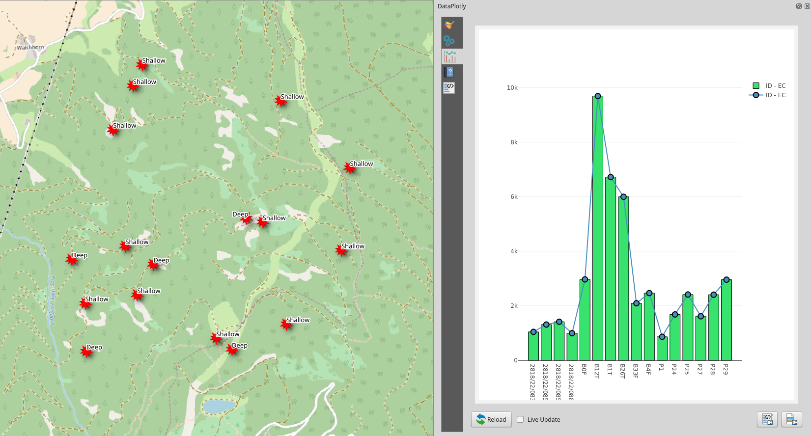

Data Plotly
DataPlotly is een python plugin voor QGIS dat het maken van D3 <https://d3js.org/> achtige diagrammen mogelijk maakt dankzij de Plotly library en de python API.
Diagrammen zijn compleet dynamisch zodat je kunt interacteren met het diagram, bijvoorbeeld in/uitzoomen, informatie opvragen door de muis te beweren en vele andere zaken.
Het diagram en de kaart zijn verbonden, dit wil zeggen dan je een object kunt selecteren in het diagram en hetzelfde object zal worden geselecteerd op de kaart:

Diagram en Kaart interactie
Voor ieder diagram, zijn vele aanpassingen mogelijk.

eenvoudig diagram voorbeeld
Met DataPlotly kun je verschillende diagrammen maken, zelfs verschillende type diagrammen, ze over elkaar heen leggen in hetzelfde diagramvenster of ze in verschillende vensters laden.


verschillende type diagrammen in hetzelfde diagramvenster

verschillende type diagrammen in aparte diagramvensters
Ieder diagram heeft specifieke instellingen en aanpassingen: het is erg simpel om de beste oplossing te kiezen die bij je behoefte past.
Naast het interactieve diagramvenster, kunnen diagrammen ook worden geëxporteerd als statische png afbeeldingen of als pure html bestanden. Html bestanden behouden de interactieve mogelijkheden van het diagram.
Als laatste, kan de plot raw html code gekopieerd en ergens anders geplakt worden, bijvoorbeeld in een html frame in de QGIS printvormgeving of in een externe website.
Plotly library javascript code is opgeslagen in de locale plugin map, zodat de plugin ook zonder internet connectie te gebruiken is.